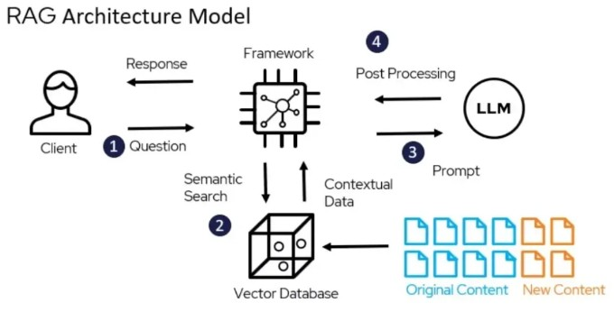

The Inference Pipeline: Answering a User Query
- Step 1 - User Query: The process begins when a user submits a prompt or question.
- Step 2 - Semantic Search: The user's query is converted into a vector embedding then system searches the vector DB to find the text chunks whose embeddings are most similar to the query embedding.
- Step 3: Prompt Augmentation: The original query and the retrieved context documents are combined into a single, augmented prompt.
- Step 4: Generation: LLM then generates a final answer based on the provided information.
